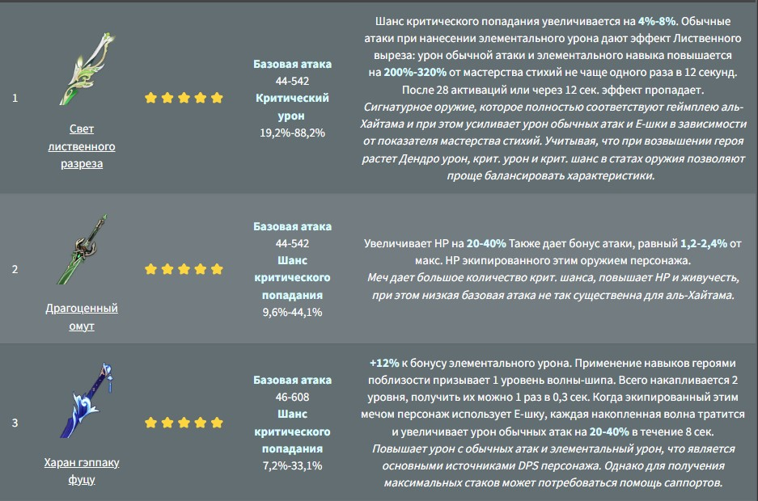
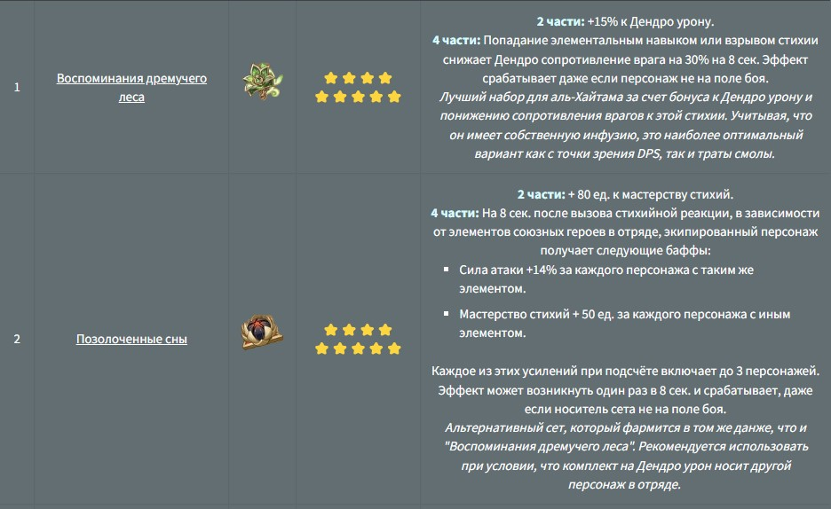

Несмотря на таинственность, вопреки расхожему мнению быт аль-Хайтама довольно обычный: он и гений, и простой служащий со стабильной зарплатой, а также вкусом к легкой жизни без суеты. В игре представлен в виде 5⭐ персонажа, владеющего Дендро глазом бога и одноручным мечом.
Оружие аль-Хайтама должно обладать следующими характеристиками: мастерство стихий; бонус элементального урона; крит. урон/шанс крита; сила атаки. Также в определенных ситуациях можно использовать мечи с восстановлением энергии. Это особенно эффективно при условии, что герой вносит основной урон с ульты, а не обычных атак, и в отряде нет дополнительных источников восполнения энергии.
Артефакты на аль-Хайтама должны обеспечивать ключевые для персонажа бонусы и характеристики, такие как мастерство стихий и элементальный урон.
